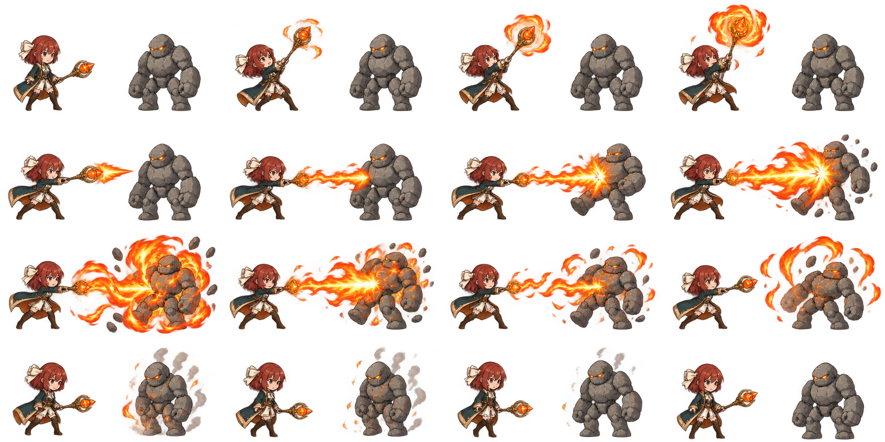

FLAME / ANIMATION STUDY 02
返回三技能樣板焰流貫穿
B版Q人物 × 卡通手繪逐格特效火法・燼羽 × 訓練魔像
素材載入中
0.00 / 3.20 秒
蓄力噴發命中消散
第一版動態驗證：16張關鍵影格依時間播放，包含角色姿勢、焰流、爆焰與煙塵。這版用來檢查外觀與演出節奏；影格之間仍可見姿勢和比例變化，尚未達到平滑連續動畫。角色與特效目前合在影格內，後續需分離才能自由站位、改變攻擊方向與選擇目標。
查看16格原始素材

第一版動態驗證：16張關鍵影格依時間播放，包含角色姿勢、焰流、爆焰與煙塵。這版用來檢查外觀與演出節奏；影格之間仍可見姿勢和比例變化，尚未達到平滑連續動畫。角色與特效目前合在影格內，後續需分離才能自由站位、改變攻擊方向與選擇目標。
